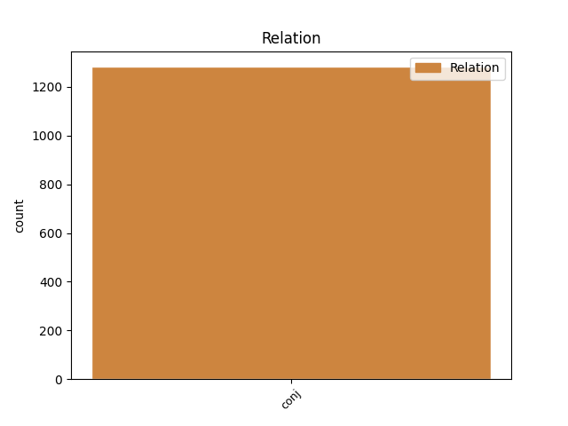
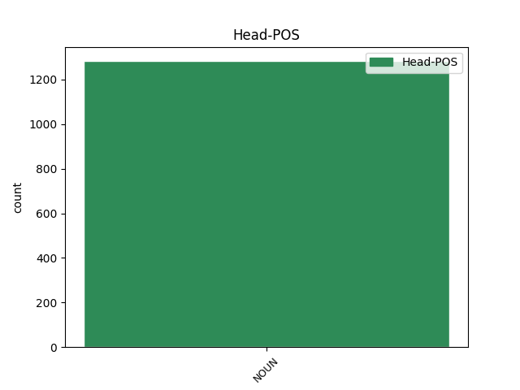
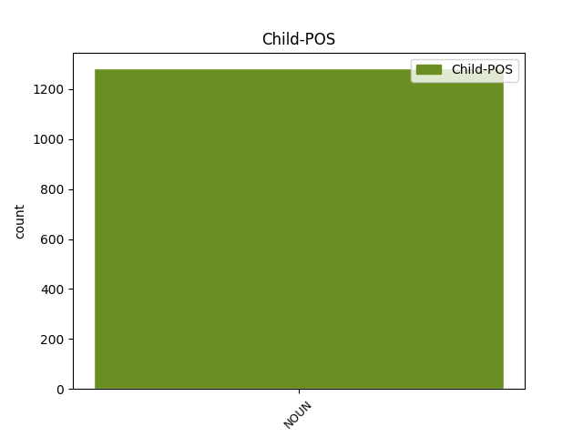

Distribution of features within this leaf



Agreement Rules sorted by frequency.
- When the dependent token is the conjunct(conj) of the head token, and the head token is NOUN and the dependent token is NOUN.
1 पार्टी _ _ _ _ 0 _ _ _
2 कार्यकर्ताओं कार्यकर्ता NOUN NN Case=Acc|Gender=Masc|Number=Plur|Person=3 0 _ _ _
3 और _ _ _ _ 0 _ _ _
4 नेताओं नेता NOUN NN Case=Acc|Gender=Masc|Number=Plur|Person=3 2 conj _ ChunkId=NP2|ChunkType=head|Tam=0|Translit=netāoṁ|Vib=0_ने
5 ने _ _ _ _ 0 _ _ _
6 गुटबाजी _ _ _ _ 0 _ _ _
7 को _ _ _ _ 0 _ _ _
8 भुला _ _ _ _ 0 _ _ _
9 कर _ _ _ _ 0 _ _ _
10 इस _ _ _ _ 0 _ _ _
11 कार्यक्रम _ _ _ _ 0 _ _ _
12 में _ _ _ _ 0 _ _ _
13 बढ़ _ _ _ _ 0 _ _ _
14 - _ _ _ _ 0 _ _ _
15 चढ़कर _ _ _ _ 0 _ _ _
16 हिस्सा _ _ _ _ 0 _ _ _
17 लिया _ _ _ _ 0 _ _ _
18 । _ _ _ _ 0 _ _ _
Disagree Examples:
1 यहाँ _ _ _ _ 0 _ _ _
2 आप _ _ _ _ 0 _ _ _
3 चाँदी _ _ _ _ 0 _ _ _
4 के _ _ _ _ 0 _ _ _
5 आभूषण आभूषण NOUN NN Case=Nom|Gender=Masc|Number=Plur|Person=3 0 _ _ _
6 , _ _ _ _ 0 _ _ _
7 बीडवर्क बीडवर्क NOUN NN Case=Acc|Gender=Masc|Number=Sing|Person=3 5 conj _ ChunkId=NP5|ChunkType=head|SpaceAfter=No|Tam=0|Translit=bīḍavarka|Vib=0
8 , _ _ _ _ 0 _ _ _
9 कढ़ाई _ _ _ _ 0 _ _ _
10 का _ _ _ _ 0 _ _ _
11 काम _ _ _ _ 0 _ _ _
12 और _ _ _ _ 0 _ _ _
13 सीक्वन _ _ _ _ 0 _ _ _
14 का _ _ _ _ 0 _ _ _
15 काम _ _ _ _ 0 _ _ _
16 खूबसूरत _ _ _ _ 0 _ _ _
17 अंदाज _ _ _ _ 0 _ _ _
18 में _ _ _ _ 0 _ _ _
19 देख _ _ _ _ 0 _ _ _
20 और _ _ _ _ 0 _ _ _
21 खरीद _ _ _ _ 0 _ _ _
22 सकते _ _ _ _ 0 _ _ _
23 हैं _ _ _ _ 0 _ _ _
24 । _ _ _ _ 0 _ _ _
1 यहाँ _ _ _ _ 0 _ _ _
2 आप _ _ _ _ 0 _ _ _
3 चाँदी _ _ _ _ 0 _ _ _
4 के _ _ _ _ 0 _ _ _
5 आभूषण _ _ _ _ 0 _ _ _
6 , _ _ _ _ 0 _ _ _
7 बीडवर्क बीडवर्क NOUN NN Case=Acc|Gender=Masc|Number=Sing|Person=3 0 _ _ _
8 , _ _ _ _ 0 _ _ _
9 कढ़ाई _ _ _ _ 0 _ _ _
10 का _ _ _ _ 0 _ _ _
11 काम काम NOUN NN Case=Nom|Gender=Masc|Number=Sing|Person=3 7 conj _ ChunkId=NP7|ChunkType=head|Tam=0|Translit=kāma|Vib=0
12 और _ _ _ _ 0 _ _ _
13 सीक्वन _ _ _ _ 0 _ _ _
14 का _ _ _ _ 0 _ _ _
15 काम _ _ _ _ 0 _ _ _
16 खूबसूरत _ _ _ _ 0 _ _ _
17 अंदाज _ _ _ _ 0 _ _ _
18 में _ _ _ _ 0 _ _ _
19 देख _ _ _ _ 0 _ _ _
20 और _ _ _ _ 0 _ _ _
21 खरीद _ _ _ _ 0 _ _ _
22 सकते _ _ _ _ 0 _ _ _
23 हैं _ _ _ _ 0 _ _ _
24 । _ _ _ _ 0 _ _ _
1 लगभग _ _ _ _ 0 _ _ _
2 300 _ _ _ _ 0 _ _ _
3 साल _ _ _ _ 0 _ _ _
4 पुरानी _ _ _ _ 0 _ _ _
5 इस _ _ _ _ 0 _ _ _
6 हवेली _ _ _ _ 0 _ _ _
7 की _ _ _ _ 0 _ _ _
8 नीली _ _ _ _ 0 _ _ _
9 गुंबदाकार _ _ _ _ 0 _ _ _
10 छत छत NOUN NN Case=Nom|Gender=Fem|Number=Sing|Person=3 0 _ _ _
11 और _ _ _ _ 0 _ _ _
12 नक्काशी _ _ _ _ 0 _ _ _
13 किए _ _ _ _ 0 _ _ _
14 गए _ _ _ _ 0 _ _ _
15 मोर _ _ _ _ 0 _ _ _
16 की _ _ _ _ 0 _ _ _
17 आकृति _ _ _ _ 0 _ _ _
18 के _ _ _ _ 0 _ _ _
19 कोष्ठकों कोष्ठक NOUN NN Case=Acc|Gender=Masc|Number=Plur|Person=3 10 conj _ ChunkId=NP7|ChunkType=head|Tam=0|Translit=koṣṭhakoṁ|Vib=0_को
20 को _ _ _ _ 0 _ _ _
21 देखकर _ _ _ _ 0 _ _ _
22 पर्यटक _ _ _ _ 0 _ _ _
23 दाँतो _ _ _ _ 0 _ _ _
24 तले _ _ _ _ 0 _ _ _
25 उँगली _ _ _ _ 0 _ _ _
26 दबा _ _ _ _ 0 _ _ _
27 लेते _ _ _ _ 0 _ _ _
28 हैं _ _ _ _ 0 _ _ _
29 । _ _ _ _ 0 _ _ _
1 कम _ _ _ _ 0 _ _ _
2 जगह जगह NOUN NN Case=Nom|Gender=Fem|Number=Sing|Person=3 0 _ _ _
3 व _ _ _ _ 0 _ _ _
4 अधिक _ _ _ _ 0 _ _ _
5 यातायात _ _ _ _ 0 _ _ _
6 दबाव दबाव NOUN NN Case=Acc|Gender=Masc|Number=Sing|Person=3 2 conj _ ChunkId=NP2|ChunkType=head|Tam=0|Translit=dabāva|Vib=0_में
7 में _ _ _ _ 0 _ _ _
8 संतुलन _ _ _ _ 0 _ _ _
9 के _ _ _ _ 0 _ _ _
10 लिए _ _ _ _ 0 _ _ _
11 सड़कों _ _ _ _ 0 _ _ _
12 के _ _ _ _ 0 _ _ _
13 समानांतर _ _ _ _ 0 _ _ _
14 दूसरी _ _ _ _ 0 _ _ _
15 मंजिल _ _ _ _ 0 _ _ _
16 पर _ _ _ _ 0 _ _ _
17 रेल _ _ _ _ 0 _ _ _
18 पटरी _ _ _ _ 0 _ _ _
19 है _ _ _ _ 0 _ _ _
20 तो _ _ _ _ 0 _ _ _
21 कुछ _ _ _ _ 0 _ _ _
22 स्थानों _ _ _ _ 0 _ _ _
23 पर _ _ _ _ 0 _ _ _
24 तीन _ _ _ _ 0 _ _ _
25 मंजिला _ _ _ _ 0 _ _ _
26 लोकल _ _ _ _ 0 _ _ _
27 ट्रेन _ _ _ _ 0 _ _ _
28 की _ _ _ _ 0 _ _ _
29 पटरियाँ _ _ _ _ 0 _ _ _
30 व _ _ _ _ 0 _ _ _
31 प्लेटफार्म _ _ _ _ 0 _ _ _
32 भी _ _ _ _ 0 _ _ _
33 हैं _ _ _ _ 0 _ _ _
34 । _ _ _ _ 0 _ _ _
1 दिल्ली _ _ _ _ 0 _ _ _
2 चूंकि _ _ _ _ 0 _ _ _
3 मीडिया _ _ _ _ 0 _ _ _
4 का _ _ _ _ 0 _ _ _
5 मक्का _ _ _ _ 0 _ _ _
6 - _ _ _ _ 0 _ _ _
7 मदीना _ _ _ _ 0 _ _ _
8 है _ _ _ _ 0 _ _ _
9 इसलिए _ _ _ _ 0 _ _ _
10 यहां _ _ _ _ 0 _ _ _
11 चोरी _ _ _ _ 0 _ _ _
12 उछालने _ _ _ _ 0 _ _ _
13 पर _ _ _ _ 0 _ _ _
14 इस _ _ _ _ 0 _ _ _
15 बात _ _ _ _ 0 _ _ _
16 की _ _ _ _ 0 _ _ _
17 गारंटी _ _ _ _ 0 _ _ _
18 तो _ _ _ _ 0 _ _ _
19 रहती _ _ _ _ 0 _ _ _
20 ही _ _ _ _ 0 _ _ _
21 है _ _ _ _ 0 _ _ _
22 कि _ _ _ _ 0 _ _ _
23 माल _ _ _ _ 0 _ _ _
24 भले _ _ _ _ 0 _ _ _
25 न _ _ _ _ 0 _ _ _
26 बिके _ _ _ _ 0 _ _ _
27 लेकिन _ _ _ _ 0 _ _ _
28 पब्लिसिटी पब्लिसिटी NOUN NN Case=Nom|Gender=Fem|Number=Sing|Person=3 0 _ _ _
29 और _ _ _ _ 0 _ _ _
30 देर _ _ _ _ 0 _ _ _
31 रात रात NOUN NN Case=Acc|Gender=Fem|Number=Sing|Person=3 28 conj _ ChunkId=NP11|ChunkType=head|Tam=0|Translit=rāta|Vib=0_का
32 की _ _ _ _ 0 _ _ _
33 पार्टियों _ _ _ _ 0 _ _ _
34 में _ _ _ _ 0 _ _ _
35 चर्चा _ _ _ _ 0 _ _ _
36 तो _ _ _ _ 0 _ _ _
37 होगी _ _ _ _ 0 _ _ _
38 । _ _ _ _ 0 _ _ _